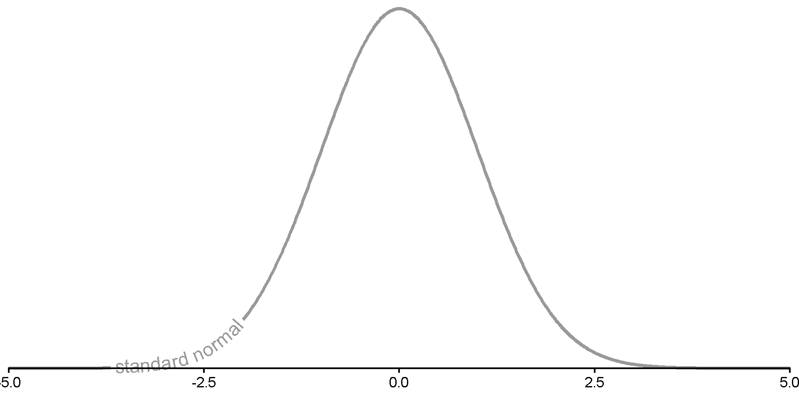

[1] -1.959964 1.959964Confidence Intervals
PSYC 2020-A01 / PSYC 6022-A01 | 2025-10-17 | Lab 9
Jessica Helmer
Outline
- Assignment 8 Review
- Confidence Intervals
- One-Sample t-test
Learning objectives:
R: CI and t-statistics in R
Assignment 8 Review
[placeholder for Assignment 8 review]
Confidence Intervals
Most common: 95% CI
○ Interpretation: If you were to take 100 samples, 95 CIs of your 100 samples will contain the true mean
For standard normal,
| CI | z cutoff | generally |
|---|---|---|
| 99.7% | [-3, 3] | [\(\bar{x} - 3 * SD\), \(\bar{x} + 3 * SD\)] |
| 95% | [-2, 2] | [\(\bar{x} - 2 * SD\), \(\bar{x} + 2 * SD\)] |
| 68% | [-1, 1] | [\(\bar{x} - 1 * SD\), \(\bar{x} + 1 * SD\)] |
Note
We say 2 here, but what number does the 95% CI really correspond to? 1.96
Confidence Interval and Width
Confidence Level (\(1 - \alpha\)) can communicate uncertainty about your results
○ Designated proportion of such intervals that will include the true population value
○ \(\alpha =\) 0.01 for 99% CI
○ \(\alpha =\) 0.05 for 95% CI
Confidence level proportional to confidence interval width

CIs for Symmetric Distributions
When a distribution is symmetric, CIs for that distribution are also symmetric
○ Includes normal (e.g., z-) distribution
○ t distribution

Cutoff Z-Values Example
Say you want to find the cutoff z values for some confidence interval
Two examples: 95% CI and 97.3% CI (one typical, one as exercise)
We want the \(\alpha = 1 -\) confidence level piece to be equal on both sides
95% CI \(\alpha = 1 - .95 = 5\%\) on both sides
So \(.05 / 2 = .025\) on each side
Need value for \(.025\) and \(.95 + .025\) (\([.025, .975]\))
Which one has a higher confidence level? Which one has a larger width?
Confidence Interval Generally
Derived with sample mean (\(\bar{x}\)) and standard error (\(\frac{\sigma}{\sqrt n}\))
\(CI = \bar{x} \pm z \frac{\sigma}{\sqrt n}\) or
\(CI = [\bar{x} - z \frac{\sigma}{\sqrt n}, \bar{x} + z \frac{\sigma}{\sqrt n}]\)
Food for Thought
With this formula, we would only use the positive version of the z cutoff, so that the lower bound ends up lower than the mean and the higher bound ends up higher. You can also think instead as both adding the z cutoff—it just ends up becoming a minus sign because the lower bound has a negative z cutoff.
Confidence Interval Example
Let’s find a 95% confidence interval of the mean for iris Petal Length
[1] 1.4 1.4 1.3 1.5 1.4 1.7x_bar <- mean(iris$Petal.Length)
x_sd <- sd(iris$Petal.Length)
n <- length(iris$Petal.Length) # although remember to be thinking about missing data
z_cutoff <- qnorm(.975)
Petal.Length.CI <- c(x_bar - z_cutoff * x_sd / sqrt(n), x_bar + z_cutoff * x_sd / sqrt(n))
Petal.Length.CI[1] 3.475499 4.040501If we collected samples of petal length many times, we would expect the interval [3.47, 4.04] to contain the true population mean of petal length 95% of the time.
Confidence Interval Example
Let’s find a 80% confidence interval of the mean for iris Sepal Length
[1] 5.1 4.9 4.7 4.6 5.0 5.4Sepal.Length.CI <- c(mean(iris$Petal.Length) - qnorm(.9) * sd(iris$Petal.Length) /
sqrt(sum(!is.na(iris$Sepal.Length))),
mean(iris$Petal.Length) + qnorm(.9) * sd(iris$Petal.Length) /
sqrt(sum(!is.na(iris$Sepal.Length))))
Sepal.Length.CI[1] 3.573282 3.942718If we collected samples of petal length many times, we would expect the interval [3.57, 3.94] to contain the true population mean of petal length 95% of the time.
Confidence Intervals and NHST
If a 95% confidence interval does not contain a value, that is mathematically equivalent to it being “significantly different” from that value.
E.g., if your null hypothesis \(H_0\) was that the mean of petal length is no different from an expected population mean of 3.3, would you reject or accept the null hypothesis?
We would reject the null hypothesis because the 95% CI does not include 3.3.
From Z to T: No longer normal
Z- vs. T-Distribution
T-distribution has thicker tails
As df increases, it looks more like a standard normal distribution
With df = \(\infty\), exactly follows a normal distribution (so approximates with large df)
Z- vs. T-Distribution
Z- vs. T-Distribution
Z- vs. T-Distribution

Z- vs. T-Distribution

Z- vs. T-Distribution

T-Test: How many tails?
Need to consider whether to use a “one-tail” or “two-tail” t-test.
One-Tail (One-Sided)
We want to test whether something is lower or higher than a value, but not both
Only one limit
Two-Tails (Two-Sided)
We want to test whether something is either lower or higher than a value
Two limits (like how we’ve been doing z-tests
T-Test: How many tails?
Need to consider whether to use a “one-tail” or “two-tail” t-test.
One-Tail (One-Sided)

Two-Tails (Two-Sided)
T-Test: How many tails?
Notice that two-tailed tests are harder to “beat.”
Cutoff T-Values Example
Say you want to find the cutoff t values
Two examples: t(df = 3) and t(df = 37) for \(\alpha = .05\)
Both upper one-tailed and two-tailed
Which will have the larger magnitude cutoff values?
One-Tailed
All of our \(\alpha = .05\) goes on the upper side
Need a cutoff for \(.95\)
[1] -2.353363[1] -1.687094\(t_{crit}(3) = -2.35\)
\(t_{crit}(37) = -1.69\)
Two-Tailed
\(\alpha = 1 - .95 = 5\%\) on both sides
So \(.05 / 2 = .025\) on each side
Need value for \(.025\) and \(.95 + .025\) (\([.025, .975]\))
[1] -3.182446 3.182446[1] -2.026192 2.026192\(t_{crit}(3) = [-3.18, -3.18]\)
\(t_{crit}(37) = [-2.03 2.06]\)
Symmetrical cutoffs, so can also just flip sign
One-Sample T-Test Generally
Asks “is there a question between our sample and the population?”
Derived with sample mean (\(\bar{x}\)), population mean (\(\mu\)), and standard error (\(\frac{\bar{\sigma}}{\sqrt n}\))
\[t = \frac{\bar{x} - \mu}{\frac{\bar{\sigma}}{\sqrt{n}}}\]
With a t-test, we don’t have a known population SD (\(\sigma\)), so we use the SD we observe in our sample \(\bar{\sigma}\)
Get our t-statistic and compare it to a critical t cutoff value
T-Test Example
Let’s say a researcher claims the average highway miles per gallon across all cars is 30mpg. They collect a sample of 234 cars and would like you to test this. We do not know the population standard deviation.
One- or two-tailed?
[1] 29 29 31 30 26 26x_bar <- mean(mpg$hwy)
x_sd <- sd(mpg$hwy)
n <- length(mpg$hwy) # although remember to be thinking about missing data
df <- n - 1
t_cutoff <- qt(.975, df)
hwy_t_stat <- (x_bar - 30) / (x_sd / sqrt(n))
hwy_t_stat[1] -16.85174Our observed t-statistic exceeds our cutoff t-statistic, so we reject the null.
T-Test Function
Alternatively, we can use t.test(x)
○
x = vector of numeric data
○
mu = hypothesized population mean (default is 0)
○
alternative = one of "two.sided", "less", "greater" (default is "two.sided")
One Sample t-test
data: mpg$hwy
t = -16.852, df = 233, p-value < 2.2e-16
alternative hypothesis: true mean is not equal to 30
95 percent confidence interval:
22.67324 24.20710
sample estimates:
mean of x
23.44017 [placeholder for output interpretation]
T-Test Example
Let’s say a different researcher claims the average city miles per gallon across all cars is 30mpg. They collect a sample of 234 cars You are confident they are wrong—you think it is certainly less than that. We do not know the population standard deviation.
One- or two-tailed?
One Sample t-test
data: mpg$cty
t = -47.233, df = 233, p-value < 2.2e-16
alternative hypothesis: true mean is less than 30
95 percent confidence interval:
-Inf 17.31843
sample estimates:
mean of x
16.85897 [placeholder for output interpretation]
T-Test and NHST
Remember, even when the statistic is small, for two-tailed tests (because negative), we reject when we exceed the bounds of our critical value
For one-tailed tests, it needs to exceed the bound of that tail’s cutoff
Reject or accept null?